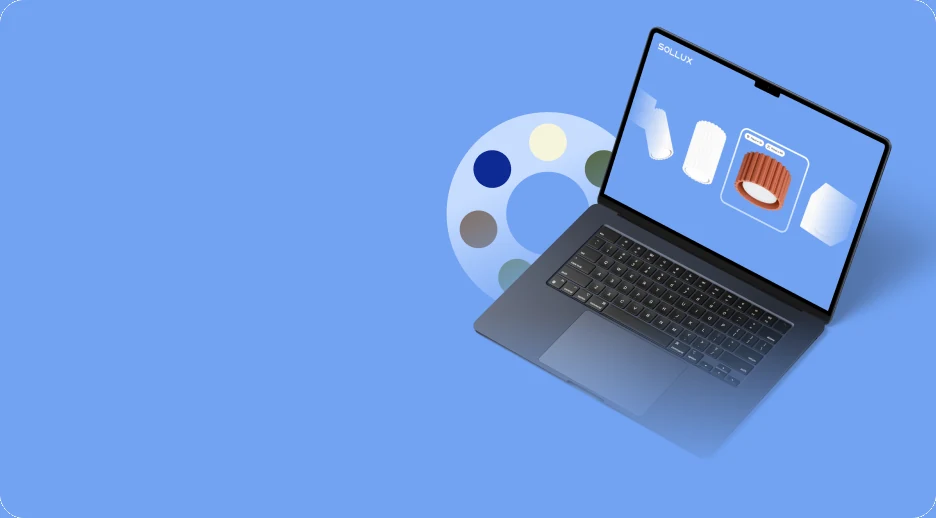
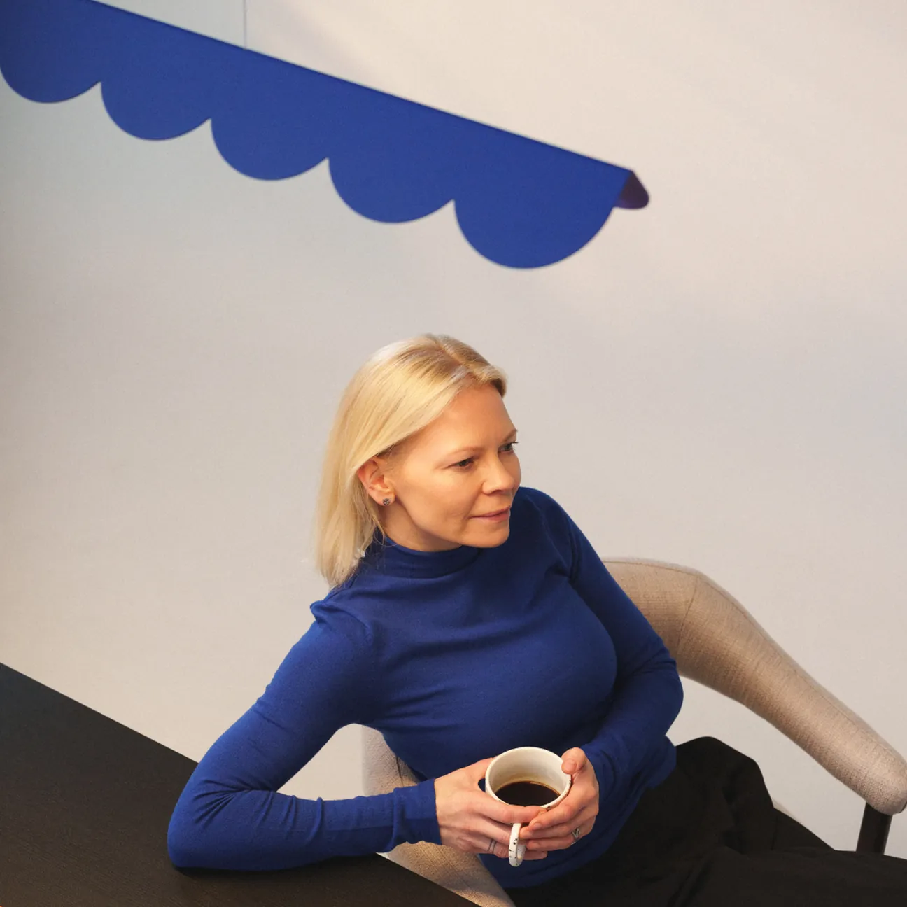
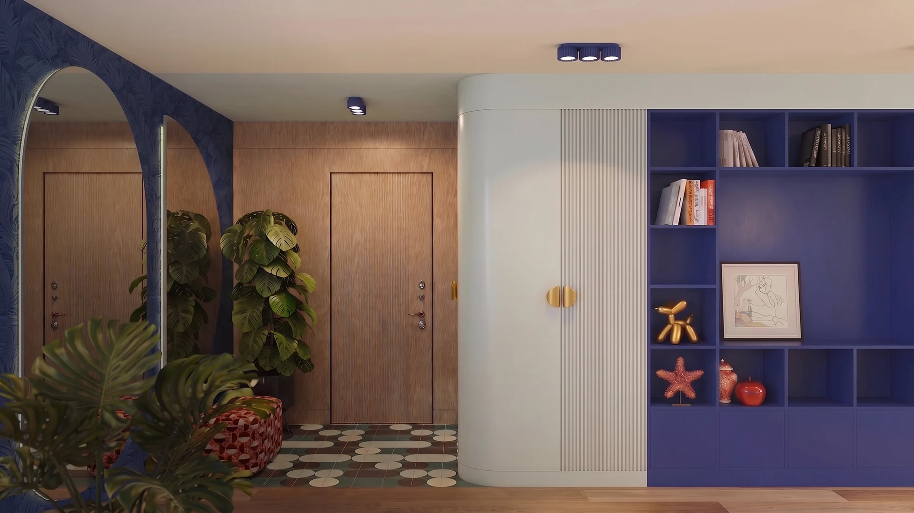

Szybka reakcja interfejsu: zmiana kolorów i lekkie interakcje z kursorem.
SYSTEM WIZUALNY / 02
PRZEGLĄD SYSTEMU PROJEKTOWEGOProjekt to
Projekt to
spójny system.
Zestawienie elementów użytych na stronie: kolorów pobranych ze zmiennych CSS, lokalnej czcionki, zasad animacji, responsywności i dołączonych grafik.
01 / PALETA KOLORÓWSpokojne barwy.
Spokojne barwy.
Jeden wyrazisty akcent.
Poniższe kolory odpowiadają wartościom w arkuszu stylów sklepu. Kliknij wybrany kolor, aby skopiować jego kod HEX.
Wybierz kolor, aby skopiować jego kod.
02 / TYPOGRAFIAJedna rodzina.
Jedna rodzina.
Wiele zastosowań.
Zmienna czcionka Red Hat Display w lokalnym pliku WOFF2. Strona nie wymaga pobierania fontów z Google Fonts.
RED HAT DISPLAY · FONT ZMIENNY / 300–900ABCDEFGHIJKLMNOPQRSTUVXYZ 0123456789
Światło zmienia
wszystko.
Światło nadaje kształt przestrzeni.
Kolor i forma w nowym świetle.
Lekki 300Średni 500Pogrubiony 700Bardzo gruby 900
03 / ZASADY ANIMACJIRuch, który
Ruch, który
ma znaczenie.
Podane czasy animacji pochodzą z rzeczywistego CSS sklepu. W miarę możliwości wykorzystują właściwości transform i opacity.
Powiększanie grafik w kafelkach i spokojniejsze przejścia.
Płynne przenikanie slajdów i wyraźne przejścia między scenami.
Animacje są dodatkiem: główna strona zawiera obsługę prefers-reduced-motion . Pełna weryfikacja dostępności wymaga również testów ręcznych i technologii wspomagających.
04 / ZASOBY GRAFICZNEKażdy zasób ma
Każdy zasób ma
swoją funkcję.
To lokalne pliki dostarczane z projektem. Ich wymiary są odczytywane z załadowanych grafik, a nie przedstawiane jako wyniki wydajności.



Pochodzenie grafik ma znaczenie: część materiałów odtworzono, ponieważ nie udało się wyeksportować oryginalnego pliku Figmy. Nie są to oryginalne zasoby projektowe.